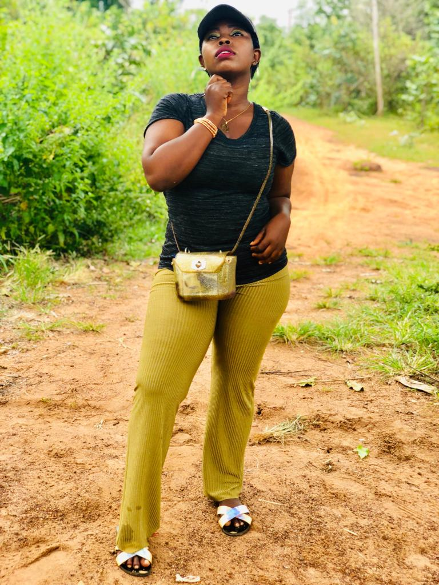

MY ACHIEVEMENT
The important things to know is that the best Achiever
of life are the best Conquerors of Pains and Misfortune.Remember, before you become an achiever, there are somethings
to understand,because the wise one says,If you fail to plan,you will plan to fail so also have it in mind
"If you can't fly run, If you can't run walk, If you can't crawl by all means keep on moving until you get to High Level".I
have passed through hardtime by failing before becoming an achiever.I am an Achiever in so diverse ways:
Firstly,am so glad to say am an Achiever Academically,been in
Kwara State University (KWASU), is one of the achievement,because not everyone is priviledge to be where I am today
but give Glory to God.Am so happy that I achieve my aim and ambition of meeting the academic standard of my choice.
According to a Scholar Malcolm X He says"Education is our passport to the future, for tomorrow belongs to the
people who prepare for it today."
Secondly, I am glad to say am an Achiever Musically. I could
Remember then,when I was a young boy, I don't have it in mind to learn keyboard,But My Father usually say a word
"Keyboard is the mother of all Instrument" during all those period I have determination within my self which helps
me today and has become part and parcel of me. And am so glad to say "Am also a Jack of all Instrument."
Am so glad to say this for you to become an Achiever, first
thing to have is "Determination" an adage says "If you can't fly run, If you can't run walk, If you can't crawl by
all means keep on moving until you get to High Level and become an Achiever". MY ACHIEVEMENT.
TO know more about my Achievement, click on this link My Achivement
Click here for body background.